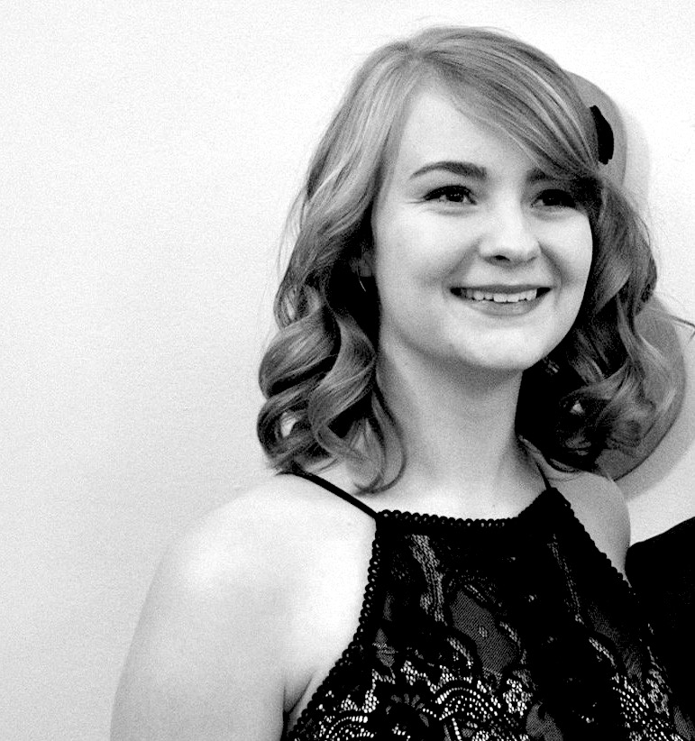

about izzi
I am a dual major in Design, Innovation & Society and Business Management at Rensselaer Polytechnic Institute where I will graduate in May 2018.
In addition to being a student, I am actively involved with Design for America, the Photography Club, Statler & Waldorf (a campus satire magazine) and Pi Beta Phi Fraternity for Women.
This past summer, I took a course in front end web development. In this course, I learned HTML, CSS, Javascript and more. Graphic design has always been an interest of mine, so designing for the web was something I was enthusiastic to learn.
Product Design and Design for America are two true passions of mine. Using the human centered design process to create local and social impact in my community is something that I am devoted to. DFA is one of my favorite clubs because I love working with energetic people who share similar interests to me. You can find out more about my involvement in DFA Rensselaer here.
In addition to design and web development, I enjoy photography, graphic design, drawing, painting, reading, discovering new music and cooking.
For my resume, click here.

{kind=link}